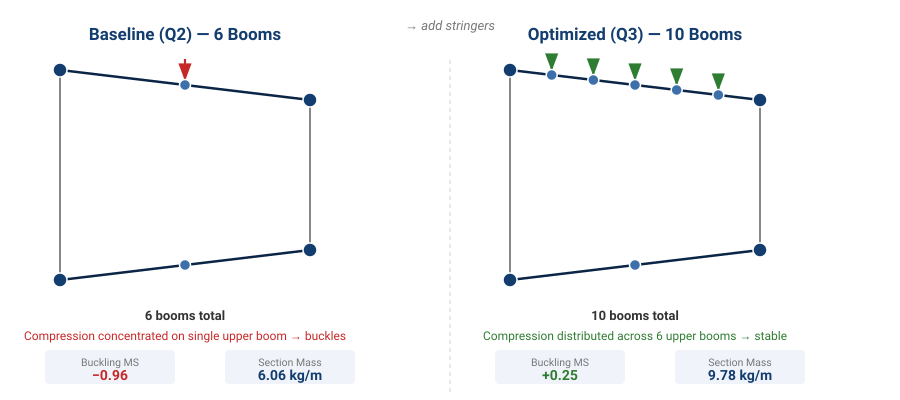
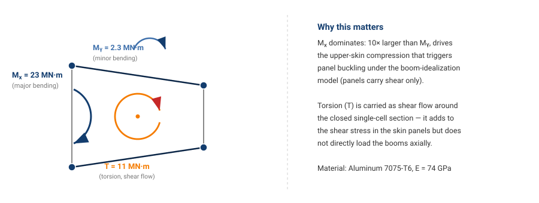

Structural Analysis | Design Optimization | Failure Mode Analysis

This project involved the design and optimization of a stiffened aluminum wing box structure subjected to combined bending, shear, and torsion loads. The baseline design exhibited a critical buckling failure (negative margin of safety), which was resolved through systematic stiffener placement optimization while maintaining mass efficiency.
Using a spreadsheet-based structural analysis framework, the design was refined to achieve positive margins of safety across all failure modes (bending, shear, and panel buckling) — demonstrating practical trade-offs between structural performance and weight.
A single-cell stiffened aluminum wing box (light-aircraft construction) is subjected to combined loads:

Schematic free-body diagram (not to scale) showing the three applied loads used in the boom-idealization analysis.
The baseline configuration consisted of 6 stiffeners (booms) connected by thin aluminum panels. Analysis revealed:
Critical margin of safety: -0.964 (UNSTABLE)
| Failure Mode | Critical Value | Margin of Safety | Status |
|---|---|---|---|
| Bending Stress | Max stress 189 MPa | +2.10 | ✓ Safe |
| Shear Stress | Max shear flow 34.2 N/mm | +4.35 | ✓ Safe |
| Panel Buckling (Upper Skin) | Critical stress 179 MPa | -0.964 | ❌ CRITICAL |
Upper skin panels will buckle before meeting strength requirements. Design intervention required.
Panel buckling is controlled by three factors: panel width, thickness, and axial compression stress. The buckling stress is:
σcr = K·E·(t/b)²
Since external dimensions are fixed, width (b) cannot be reduced. Therefore:
Selected approach: Add stringers to upper and lower skins to reduce peak compression stress on any single boom.
| Parameter | Baseline (Q2) | Optimized (Q3) | Change |
|---|---|---|---|
| Structural Mass | 6.06 kg | 9.78 kg | +61.4% |
| Critical MS Bending | +2.10 | +3.52 | +68% ↑ |
| Critical MS Shear | +4.35 | +3.45 | -21% ↓ |
| Critical MS Buckling | -0.96 ❌ | +0.25 ✓ | +1.21 FIXED |
Margin of safety improved from -0.96 to +0.25 by distributing bending stress across additional stringers.
Bending, shear, and buckling all exhibit positive margins — design is now structurally adequate.
Adding 4 stringers increases section weight from 6.06 to 9.78 kg/m. This is acceptable for a light-aircraft structure where safety is paramount.
Not all failure modes are equally critical. The baseline design had two positive margins (bending/shear) but one critical failure (buckling). This demonstrates why comprehensive failure analysis — covering stress, shear, and buckling — is essential. A single positive margin is insufficient.
Fixing buckling by adding stringers increased mass by 61%, but this trade-off is standard in aerospace. Light structures must balance:
Buckling stress depends on (t/b)² — small changes in panel thickness or width have quadratic effects. In this design:
Using a spreadsheet framework allowed rapid parametric studies:
This approach (spreadsheet + structured analysis) is realistic for preliminary design — full FEA would be used for detailed validation.
The wing box was idealized as 10 booms (concentrated areas) connected by thin panels:
Applied moments (Mx, My) create bending stresses in each boom:
σboom = (Mx·Iy - Mxy·Ixy)/(Ix·Iy - Ixy²) · x + (My·Ix - Mxy·Ixy)/(Ix·Iy - Ixy²) · y
Maximum compressive stress in upper skins determines buckling risk.
Critical buckling stress for simply supported rectangular panels:
σcr = K·E·(t/b)²
Where K depends on panel aspect ratio (a/b). For this design, K ≈ 3.6–3.8 for upper skin panels.
MS = (Critical Value / Applied Value) − 1
MS > 0 = Safe; MS < 0 = Failure (as seen in baseline buckling).
This project demonstrated structural analysis and design optimization from problem identification through solution. The baseline wing box design contained a critical buckling failure that was systematically resolved through stiffener optimization.
Key accomplishment: Transformed an unsafe structure (MS = -0.96) into a safe, practical design (all MS > 0) while maintaining realistic aircraft construction principles. The 61% mass increase is a standard trade-off in aerospace engineering when safety is the constraint.
The analysis framework developed (spreadsheet-based boom idealisation, section properties, failure modes) is representative of preliminary aircraft structural design and could be extended to more complex geometries or refined with full finite element analysis.
✓ Project Outcomes